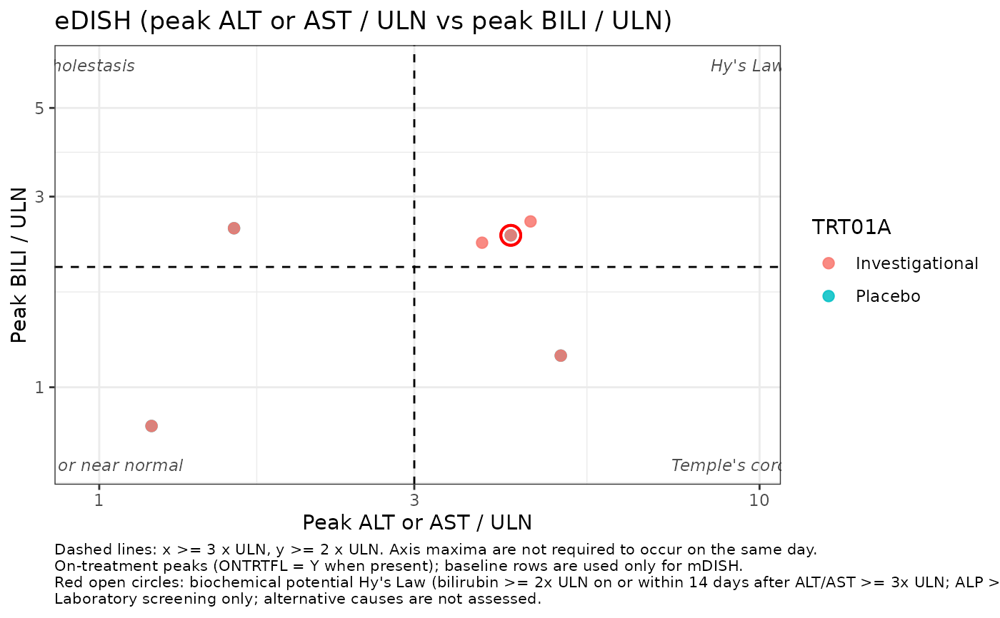
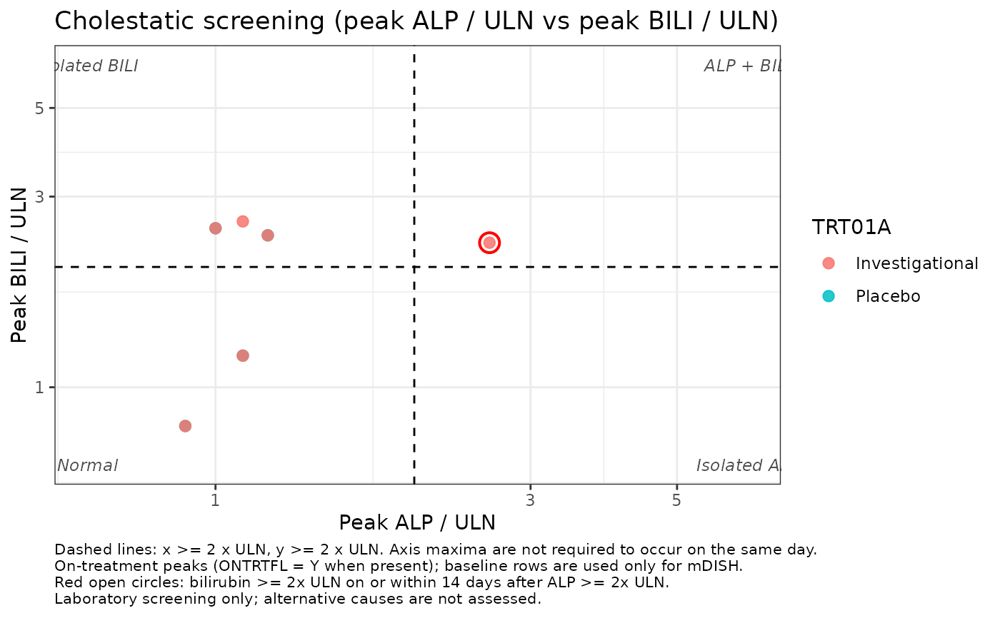

Default hepatocellular eDISH is one log-log panel colored by treatment so arm imbalance is visible. Quadrant names are annotated in the corners. Open red circles mark biochemical potential Hy's Law (bilirubin in the concurrent window after ALT/AST elevation, with optional ALP exclusion). Axis maxima are not required to occur on the same day.
Arguments
- adsl, adlb
Passed to
classify_hyslaw()whenclassifiedisNULL.- classified
Optional list from
classify_hyslaw().- which
"edish"is peak ALT or AST / ULN vs peak BILI / ULN;"mdish"uses peak / baseline;"cholestatic"is peak ALP / ULN vs peak BILI / ULN.- color_by
"arm"colors points by the grouping variable (default, for treatment imbalance)."quadrant"colors by screening quadrant.- log_axes
If
TRUE, both axes use log10 scales.- facet
If
TRUE, facet by the grouping variable when it has at least two levels. DefaultFALSEkeeps arms on one panel.- annotate_quadrants
If
TRUE, print quadrant names in the corners.- mark_potential
If
TRUE, overlay open red circles on biochemical potential Hy's Law (eDISH / mDISH) or concurrent cholestatic cases.- title
Plot title. Generated from
whichwhenNULL.- ...
Passed to
classify_hyslaw().
Examples
data <- make_synthetic_hyslaw_data(n_extra = 0L, seed = 1L)
plot_edish(data$ADSL, data$ADLB)

plot_edish(data$ADSL, data$ADLB, which = "cholestatic")
